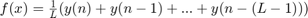
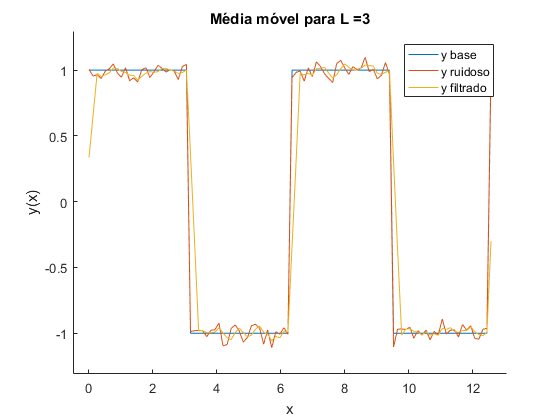
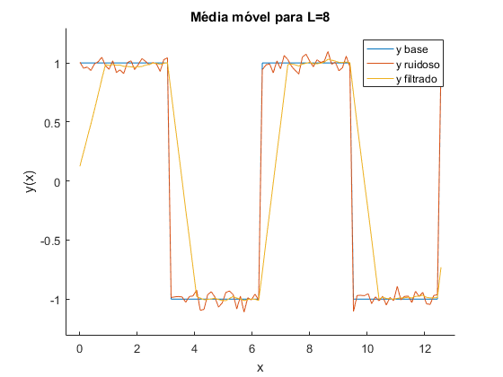

Script para publish
Programa desenvolvido para demonstrar funcionalidades MATLAB para exportar relatórios
% Funções de inicialização padrão clc clear all close all
Utilizaremos como exemplo a função de média móvel Começamos com a criação de um vetor x que vai de 0 até 2*pi com 100 pontos. Em seguida, uma onda quadrada é criada e passa por um canal awgn com SNR de 25 dB
x = linspace(0,2*pi*2,100); y = square(x); y_channel = awgn(y,25);
Antes de aplicarmos a média móvel, devemos lembrar que:

No script, podemos fazer isso da seguinte forma:
L = 3; B = ones(1,L)/L; y_filtered = filter(B,1,y_channel);
Agora que temos uma saída filtrada, podemos avaliar graficamente o resultado:
figure(1) hold on plot(x,y) plot(x,y_channel) plot(x,y_filtered) title('Média móvel para L =3') xlabel('x') ylabel('y(x)') legend('y base','y ruidoso','y filtrado') xlim([-0.5 4*pi+0.5]) ylim([min(y_channel)-0.2 max(y_channel)+0.2])
Podemos também avaliar uma janela móvel maior:
L = 8; B = ones(1,L)/L; y_filtered = filter(B,1,y_channel); figure(2) hold on plot(x,y) plot(x,y_channel) plot(x,y_filtered) title('Média móvel para L=8') xlabel('x') ylabel('y(x)') legend('y base','y ruidoso','y filtrado') xlim([-0.5 4*pi+0.5]) ylim([min(y_channel)-0.2 max(y_channel)+0.2])
Conclusão: Conforme esperado, conforme maior a janela mais suave a curva, porém maior o atraso também.